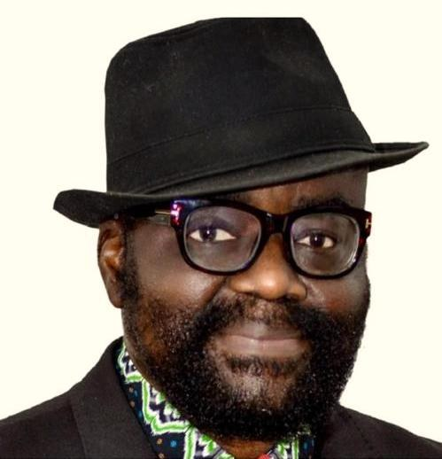

The Atiku factor, By Wole Olaoye

The Atiku factor, By Wole Olaoye
Former Vice-President Atiku Abubakar remains in contention for the 2027 presidential election, despite a court ruling that prompted claims that all 470 candidates of his party, the African Democratic Congress (ADC), had been nullified. After nearly a day of uncertainty, a pronouncement by Mohammed Kudu Haruna, the Independent National Electoral Commission’s commissioner for information, voter education and stakeholder engagement, indicated that Atiku was still on the ballot.
The episode drew allegations that the ruling All Progressives Congress (APC) was seeking to block Atiku, which the party denied. The commentary argues that Atiku’s electoral record makes him a significant opposition figure: in 2023 he received 6,984,520 votes, compared with President Bola Tinubu’s 8,794,726. It says a legal removal of Atiku, whether linked to the ADC’s leadership dispute or an eligibility challenge, could have political and regional consequences.
In the North, the analysis suggests, Atiku’s absence could split his support among other opposition candidates, local political structures or abstention. Rabiu Kwankwaso could become the most prominent northern opposition figure, particularly in the Northwest, while APC governors would seek to attract voters in their states. In the Northeast, where Atiku won five of six states in 2023 and received about 1.7 million votes, the commentary sees no single candidate positioned to inherit his support. It says votes could move to an opposition alliance or become less concentrated, while Borno and Yobe might lean further toward the APC.
The possible effects would vary elsewhere. In Middle Belt states, voters who previously backed Atiku could turn to Peter Obi or smaller parties, while local security concerns and politics would shape choices in other states. The analysis also warns that perceived exclusion of leading candidates could discourage turnout and deepen doubts about judicial independence, although it says there is no direct evidence for claims that the ruling party influenced the court decision. It concludes that Atiku’s continued presence makes him a major factor in the contest, while voters’ concerns about their future remain central.
Source: Premium Times